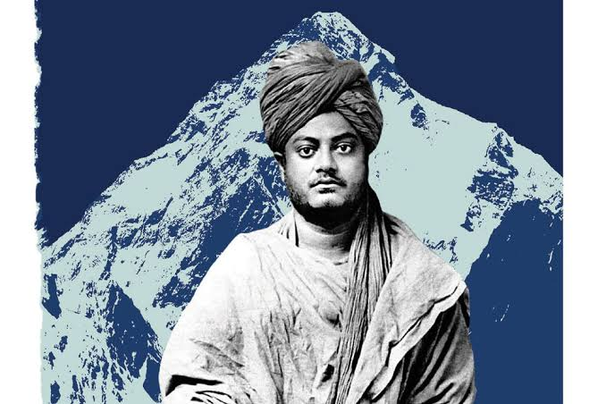
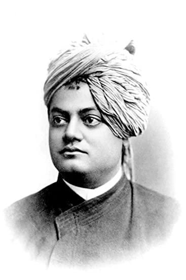
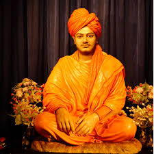

Vivekananda, original name Narendranath Datta, Datta also spelled Dutt, (born January 12, 1863, Calcutta [now Kolkata]—died July 4, 1902, near Calcutta), Hindu spiritual leader and reformer in India who attempted to combine Indian spirituality with Western material progress, maintaining that the two supplemented and complemented one another. His Absolute was a person’s own higher self; to labour for the benefit of humanity was the noblest endeavour.
Personal life

He had grown up in a religious family but studied several religious books and knowledge led him to question the existence of God and sometimes he believed in Agnosticism. But he could not completely deny the fact about the supremacy of God. In 1880, he joined Keshab Chandra Sen's Nava Vidhan and also became a member of Sadharan Brahmo Samaj led by Keshab Chandra Sen and Debendranath Tagore.
Brahmo Samaj recognized one God, unlike idol worship. Several questions were running in the mind of Vivekananda and during his spiritual crisis, he first heard about Shri Ramakrishna from William Hastie, the Principal of the Scottish Church C"Yes, I have. I see God as clearly as I see you, only in a much deeper sense". After this Vivekananda started visiting Dakshineshwar and got several answers to the questions that were in his mind.ollege. He finally met Shri Ramakrishna Paramhant Dakshineshwar Kali Temple and Vivekananda asked him a question, "Have you seen God?" which he had asked so many spiritual leaders but was not satisfied. But when he asked Ramakrishna, he gave such a simple answer that
Education

n 1871, at the age of eight, Narendranath enrolled at Ishwar Chandra Vidyasagar's Metropolitan Institution, where he went to school until his family moved to Raipur in 1877.[30] In 1879, after his family's return to Calcutta, he was the only student to receive first-division marks in the Presidency College entrance examination. [31] He was an avid reader in a wide range of subjects, including philosophy, religion, history, social science, art and literature.[32] He was also interested in Hindu scriptures, including the Vedas, the Upanishads, the Bhagavad Gita, the Ramayana, the Mahabharata and the Puranas. Narendra was trained in Indian classical music,[33] and regularly participated in physical exercise, sports and organised activities. Narendra studied Western logic, Western philosophy and European history at the General Assembly's Institution (now known as the Scottish Church College).[34] In 1881, he passed the Fine Arts examination, and completed a Bachelor of Arts degree in 1884.[35][36] Narendra studied the works of David Hume, Immanuel Kant, Johann Gottlieb Fichte, Baruch Spinoza, Georg W. F. Hegel, Arthur Schopenhauer, Auguste Comte, John Stuart Mill and Charles Darwin.[37][38] He became fascinated with the evolutionism of Herbert Spencer and corresponded with him,[39][40] translating Herbert Spencer's book Education (1861) into Bengali.[41] While studying Western philosophers, he also learned Sanskrit scriptures and Bengali literature.[38]
Meeting ramakrishna
n 1881 Narendra first met Ramakrishna, who became his spiritual focus after his own father had died in 1884.[61]
Narendra's first introduction to Ramakrishna occurred in a literature class at General Assembly's Institution when he heard Professor William Hastie lecturing on William Wordsworth's poem, The Excursion.[51] While explaining the word "trance" in the poem, Hastie suggested that his students visit Ramakrishna of Dakshineswar to understand the true meaning of trance. This prompted some of his students (including Narendra) to visit Ramakrishna.[62][63][64]
They probably first met personally in November 1881,[note 1] though Narendra did not consider this their first meeting, and neither man mentioned this meeting later.[62] At this time, Narendra was preparing for his upcoming F. A. examination, when Ram Chandra Datta accompanied him to Surendra Nath Mitra's, house where Ramakrishna was invited to deliver a lecture.[66] According to Makarand Paranjape, at this meeting Ramakrishna asked young Narendra to sing. Impressed by his singing talent, he asked Narendra to come to Dakshineshwar.[67]
In late 1881 or early 1882, Narendra went to Dakshineswar with two friends and met Ramakrishna.[62] This meeting proved to be a turning point in his life.[68] Although he did not initially accept Ramakrishna as his teacher and rebelled against his ideas, he was attracted by his personality and began to frequently visit him at Dakshineswar.[69] He initially saw Ramakrishna's ecstasies and visions as "mere figments of imagination"[27] and "hallucinations".[70] As a member of Brahmo Samaj, he opposed idol worship, polytheism and Ramakrishna's worship of Kali.[71] He even rejected the Advaita Vedanta of "identity with the absolute" as blasphemy and madness, and often ridiculed the idea.[70] Narendra tested Ramakrishna, who faced his arguments patiently: "Try to see the truth from all angles", he replied.[69]
Narendra's father's sudden death in 1884 left the family bankrupt; creditors began demanding the repayment of loans, and relatives threatened to evict the family from their ancestral home. Narendra, once a son of a well-to-do family, became one of the poorest students in his college.[72] He unsuccessfully tried to find work and questioned God's existence,[73] but found solace in Ramakrishna and his visits to Dakshineswar increased.[74]
Death

On 4 July 1902 (the day of his death),[166] Vivekananda awoke early, went to the monastery at Belur Math and meditated for three hours. He taught Shukla-Yajur-Veda, Sanskrit grammar and the philosophy of yoga to pupils,[167][168] later discussing with colleagues a planned Vedic college in the Ramakrishna Math. At 7:00 pm Vivekananda went to his room, asking not to be disturbed;[167] he died at 9:20 p.m. while meditating.[169] According to his disciples, Vivekananda attained mahasamādhi;[170] the rupture of a blood vessel in his brain was reported as a possible cause of death.[171] His disciples believed that the rupture was due to his brahmarandhra (an opening in the crown of his head) being pierced when he attained mahasamādhi. Vivekananda fulfilled his prophecy that he would not live forty years.[172] He was cremated on a sandalwood funeral pyre on the bank of the Ganga in Belur, opposite where Ramakrishna was cremated sixteen years earlier.[173]